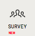

IN VIDEO VERITAS
This toolkit is provided in open source (under an MIT Licence) by the InVID european project to help journalists to verify content on social networks (please note that external InVID services used via this interface, such as those presented under the Analysis and Keyframes tabs, are not open-sourced).
It has been designed as a verification “Swiss army knife” helping journalists to save time and be more efficient in their fact-checking tasks. This is a beta version and we will update it regularly thanks to your feedback.
For any feedback (bugs, enhancement, suggestions) please email us at invid-verification-plugin@iti.gr, or leave us a direct message through the feedback widget at the bottom left. If you use our plugin regularly, thanks to give us your feedback through the permanent survey in the top right menu : 
Disclaimer: this software is provided "as is", without warranty of any kind, express or implied, including but not limited to the warranties of merchantability, fitness for a particular purpose and noninfringement. In no event shall the authors or copyright holders be liable for any claim, damages or other liability, whether in an action of contract, tort or otherwise, arising from, out of or in connection with the software or the use or other dealings in the software.
Privacy: this plugin does not gather any personal data. We implemented Google analytics only to get feedback and statistics about the tool usage, in order to improve the next releases.
InVID is a Horizon 2020 innovation action funded by the European Union under grant agreement 687786. For more information, visit our InVID website or follow us on Twitter.
The initial versions (0.1-0.5) of this plugin have been developed by AFP Medialab (Denis TEYSSOU, Jean-Michel LEUNG, Nathan GOYAT). The underlying services are provided by Thessaloniki Information Technologies Institute (ITI, CERTH).


This is a new feature (v0.59) to access the InVID plugin and to help journalists to retrieve videos and images urls within the code of a web page:

The first Analysis tab allows you to query the InVID context aggregation and analysis service developed by the Thessaloniki Information Technologies Institute (ITI). In a nutshell, this service is an enhanced metadata viewer for Youtube, Facebook and Twitter videos that allows you to retrieve contextual information, location (if detected), most interesting comments, apply reverse image search and check for tweets on the video (on Youtube). Be aware that the service may take some time if the video processed has a lot of comments. A new feature (a reprocess button) allows you to refresh the analysis.
The second Keyframe tab is an iframe opening the website of Thessaloniki Information Technologies Institute (ITI) on video fragmentation. It allows you to copy a video url (from Youtube, Twitter, Facebook, Daily Motion or Dropbox) or to upload a video file (in mp4, webm, avi, mov, wmv, ogv, mpg, flv, and mkv format) in order to segment it in keyframes which then can be searched with a right click on Google, Yandex, Tineye and Baidu images. Our service extracts more keyframes and therefore gives the opportunity to enhance the video reverse image search. Those are the real keyframes of the video, not the thumbnails served by Youtube or Facebook.
The Thumbnails tab allows you to quickly trigger a reverse image search on Google, Bing, Tineye or Yandex Images with the four thumbnails extracted from a Youtube video. Up to four tabs (according to the number of thumbnails available) are opened automatically in your browser with the results of the reverse search while the four thumbnails are also displayed in the plugin page. This tab is somewhat redundant with what can be done with the Analysis tab but it is very fast and efficient if you just need to look whether a Youtube video has already been published previously. Please note that the Chinese search engine Baidu is not implemented here because it is filtering out Youtube content.
The Search tab allows to enhance a Twitter advanced search for keywords or hashtag using the since and until operators, either separately or together to query within a time interval, up to the minute. It translates automatically the calendar date, hour and minutes into an unix timestamp to facilitate the query, e.g. of first eyewitness pictures or videos within a time range just after a breaking news event. We have also added other features from Twitter advanced such geocode, near, from, language and various filter operators.
The Magnifier lens tab allows you to display an image through its url and to zoom or apply a magnifying lens on the image, or/and to enhance it through a bicubic algorithm to help you discover implicit knowledge such as written words, signs, banners ... You can either enter the image url, upload an image from your local drive with the local file button, or drag and drop an image in another tab within your browser and copy and paste the local url. Once the image is displayed from an url, you can also perform a Google, Yandex, Tineye and Baidu reverse image search on it or use the Image forensic service designed by ITI and DW in the Reveal european project. If you are using a local image or you have modified any image (sharp, flip, bicubic), you can either download your modified image or copy a new url to paste it in google images tab which opens in your browser (watch the video below). This feature also supports links of stored images in Dropbox and Google drive.
The Metadata tab allows you to check the Exif metadata of a picture in jpeg format or metadata of a vidéo in mp4/m4v format, either through a link either through a local file. If geocoordinates are available in the picture metadata, a geolocalise button is provided automatically pointing to this location on Google map.
The Forensic tab is an iframe opening the still images forensic service developed by Thessaloniki Information Technologies Institute (ITI) in a previous european project on social media verification, Reveal.
The Contextual menu (through a right click on an image or a video url) allows you to trigger this plugin on a still image or on a youtube video link. On an image, a right click will propose you either to open the picture in the Image magnifier to examine it more closely, or to launch reverse image search engines with the image. On a video link, a right click will propose you under the InVID menu to trigger either InVID video analysis or the Youtube thumbnail reverse search (for a Youtube video).